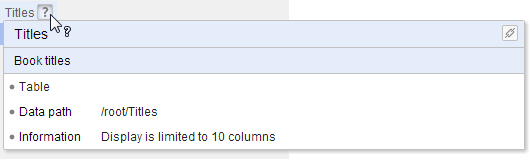

Interface utilisateur
Contenu de la section
Comment vous y retrouver dans EBX5
L'interface de EBX5 est divisée en plusieurs régions générales, référencées dans la documentation en utilisant les termes suivants :
Entête : le nom de l'utilisateur courant s'affiche dans cette zone, ainsi que la sélection de langue, un lien vers la documentation et un bouton pour fermer la session courante.
Barre de menu : cette zone comprend toutes les fonctionnalités accessibles à l'utilisateur et lui permet de naviguer entre elles.
Panneau de navigation : cette zone résume visuellement les diverses possibilités de navigation. Par exemple, sélectionner une table dans un jeu de données ou un bon de travail dans un workflow.
Espace de travail : il s'agit d'une zone de travail. Par exemple, la table sélectionnée dans le panneau de navigation s'affiche dans l'espace de travail ou bien un bon de travail en cours s'y exécute.
Les sections fonctionnelles suivantes sont affichées dans l'interface selon les permissions de l'utilisateur actuel : Données, Espace de données, Modélisation, Workflow de données, Services de données, et Administration.
Où trouver de l'aide sur EBX5
A part de la documentation de produit complète, l'aide est accessible de différentes façons dans l'interface.
Aide contextuelle
Lorsque la souris survole un élément ayant sa propre aide, un point d'interrogation apparaît. Quand vous cliquez sur cet élément, un petit panneau apparaît avec les informations relatives à cet élément.

De plus, lorsque cela est possible, un bouton est disponible à droite du libellé permettant de récupérer un permalien vers l'élément.

 Sommaire du guide utilisateur
Sommaire du guide utilisateur